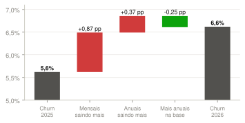
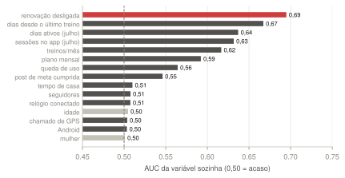
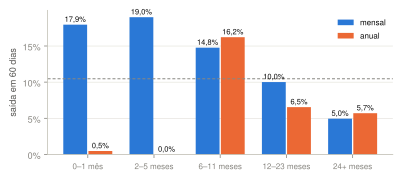
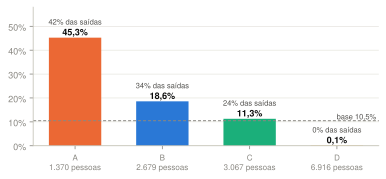
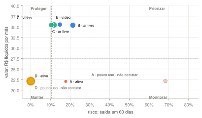

De onde vem o aumento do churn médio de 2025 para 2026, em pontos percentuais. A base reconstruída reproduz os números oficiais da empresa.

Quanto cada variável, sozinha, separa quem saiu em 60 dias (AUC; 0,50 = acaso). Base: 14.032 assinantes ativos em 31/07/2026.

Saída em 60 dias por plano e tempo de casa. A linha tracejada é a média da base (10,5%).

Regras de momento (plano × renovação × tempo de casa) separam muito mais que o k-means sozinho: AUC 0,85, e 0,87 com a camada de comportamento.

Valor (R$ líquidos por mês) × risco (saída em 60 dias) por segmento e camada.
